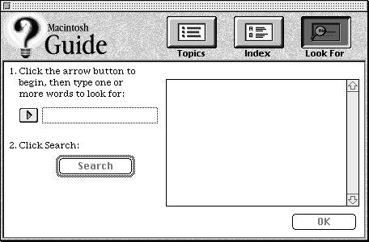
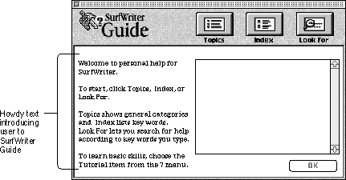

Legacy Document
Important: The information in this document is obsolete and should not be used for new development.
Important: The information in this document is obsolete and should not be used for new development.


Designing Access Windows
Every guide file must provide an access window, which appears whenever the user selects a guide file from the Help menu. From this access window, the user selects (or goes directly to view) help topics.You can choose from three types of access windows: Full Access, Single List Access, and Simple Access. The features of the windows range in complexity; the Full Access window provides several built-in access methods, the Single List access window provides one built-in access method, and the Simple Access window provides only standard navigation arrows unless you add your own access method. In general, follow these suggestions for selecting the appropriate access window for your guide file.
Note that your ability to control how the user views the guide file content differs among the three access window types. The Full Access window provides only random access to information--that is, users can pick help topics in any order and skip topics of no interest. Random access is appropriate for guide files that address diverse goals and levels of expertise (for example, the Help guide file). With the Single List and Simple Access window types, you can also provide sequential access to information; in other words, they present topics to users in a structured order. Sequential access is appropriate when you want to direct the user through a specific learning exercise, as in a Tutorial guide file. You can enforce sequential access in the Simple Access window but not in the Single List access window. Apple recommends that you simply encourage sequential access rather than enforce it strictly. For example, you can let users access the topics in any order but provide a message indicating that they have accessed information out of order.
- Use the Full Access window if your guide file has more than 20 topics and must contain subtopics. You should also use it if you plan to incorporate the Apple Guide Look For and Index features described later in this section.The Full Access window provides three built-in buttons--Topics, Index, and Look For--from which the user makes selections or enters a search phrase.
- Use the Single List Access window if your guide file has more than 7 but fewer than 20 topics.The Single List Access window provides a single scrollable list of topics.
- Use the Simple Access window if your guide file has less than seven single-level topics. The Simple Access window takes the user directly to the help information via standard navigation arrows. Alternatively, you can provide your own access route (for example, a set of buttons).
Each access window has certain default features, provided by the Guide Script command that creates the access window. For example, the Full Access window always includes the Topics, Index, and Look For buttons. You also need to provide certain features using Guide Script commands. Optionally, you can also include instructions about the guide file, known as howdy text. Apple recommends that you use howdy text only under certain conditions, which are described later in this section.
This section provides suggestions for using each of the three access window types and for using howdy text.
Designing a Full Access Window
Of the three access window types, the Full Access window is the only one that provides cross-referencing features as well as three search methods to accommodate the different ways users can conceptualize help information. You should always use the Full Access window for Help guide files and for Other guide files resembling Help guide files in content, for example, an Other guide file containing advanced help. You should also use it for any guide file with a large number of topics (generally over 20) that require extensive searching by the user.Figure 2-7 shows the default features of the Full Access window.
Figure 2-7 A Full Access window with default features
Note that this window automatically provides a two-column format. The left column varies according to which three search methods, Topics, Index, or Look For features, is selected, and the right column displays the topics derived by that method. By default, the window also provides
You cannot modify any of these default features except the Topics, Index, and Look For instructions. In general, Apple recommends that you use the default instructions; if you replace them with your own versions, keep the text as short as possible. Apple Guide automatically wraps the instruction text to a second line, if necessary.
- the Topics, Index, and Look For buttons in the upper-right portion of the window (for example, Figure 2-7 shows the screen with Topics selected)
- Topic, Index, or Look For instructions, above the left and right columns of the window, that tell the user how to use respective features
- a standard OK button, in the lower-right corner, that the user clicks to view a selected topic (alternatively, the user can view the topic by double-clicking it)
To complete the window, you must create
Optionally, you can add howdy text (for more information, see "Designing Howdy Text on Access Windows" on page 2-35).
- an application logo (or title) in the upper-left corner of the window
- the headings and topics that appear in the right column of the window when the Topics, Index, and Look For features are selected
- the content that appears in the left column of the window when Topics and Index features are selected
- the strategy that Apple Guide uses to retrieve topics when the Look For feature is selected
The next section explains how to design your application logo or title. Next come sections that explain how the Topics, Index, and Look For searching features work and how you need to implement them.
Designing the Application Logo or Title Area
Your application logo or title must fit in the available space of 59 by 185 pixels. You should
Figure 2-8 shows the Full Access screen for SurfWriter Guide with an application logo. (SurfWriter Guide is a sample guide file that is used as an example throughout this book.)
- provide a leatherette background in the application logo area.
- include with your logo a small version of the Apple Guide icon (a yellow lightbulb).
- display your application's name and the word "Guide" in any font. You might prefer a font that is identified with your company or application. For example, in Macintosh Guide, Apple displays the guide file title in Apple Garamond.
Figure 2-8 A Full Access window with an application logo and title
- Note
- Guide Maker provides a file, Standard Resources, that contains templates (two
'PICT'resources with IDs 501 and 502). You can use these templates to create your application logo picture.
Features for a Full Access Window With Topics Selected
When the user clicks the Topics button, the left column of the window displays the guide file's topic areas. These are broad categories of help that subsume one or more topics. When the user selects one, a list of related topics, organized under headings, appears in the right column of the window. You need to provide a list of topic areas in the left column and, for each topic area, a list of topics in the right column, as shown in Figure 2-9. See "Designing Topic Areas and Topics" beginning on page 2-37 for more information. You also need to provide the headings for the topics. See "Designing Headings" on page 2-40.Figure 2-9 A Full Access window with the Topics features selected
Features for a Full Access Window With Index Selected
When the user clicks the Index button, the left column presents a list of index terms for the guide file. The user can select a term by scrolling through the entire index or by using the Alpha slider above the column to view the terms beginning with the selected letter. When the user selects a term, a list of topics related to that particular term appears in the right column.You need to provide a list of index terms in the left column and the headings and topics associated with the index terms in the right column, as shown in Figure 2-9. For more information, see "Creating a Guide File Index and Associated Lists" beginning on page 3-19.
Figure 2-10 A Full Access window with Index features selected
Features for a Full Access Window With Look For Selected
When the user clicks the Look For button on the Full Access window, the left column of the Full Access window provides a search phrase entry box where the user can enter a search phrase. Note that the search phrase entry box first appears in dotted lines with the Search button dimmed, as shown in Figure 2-11.Figure 2-11 A Full Access window when Look For is selected

When the user clicks in the search phrase entry box, its dotted lines become solid and the Search button becomes active. The user can now enter a search phrase, as shown in Figure 2-12.
Figure 2-12 A Full Access window with Look For features and the cursor in the search phrase entry box
(Alternatively, the user can first click the arrow to the left of the search phrase entry box and then enter the search phrase; the cursor appears in the box.)
After the user enters a search phrase and clicks the Search button, the right column of the window lists all help topics associated with the particular phrase, as shown in Figure 2-9.
Figure 2-13 A Full Access window after a Look For search is completed
You need to determine the list of headings and topics that appear in the right column when the user enters a search phrase in the left column. See "Helping the User Search" on page 3-12 for complete instructions. In general, you should design the Look For feature so that users can receive a list of topics if they enter any of the following as a search phrase:
- multiple words
- an exact topic name
- slang, acronyms, abbreviations, or synonymous terms for a topic
- Note
- If you design the Look For feature so that it successfully retrieves topics only if the user enters a single search word, be sure to change the default Look For instruction to say "Click the arrow button to begin, then type one word to look for:"
Designing a Single List Access Window
The Single List Access window displays a single scrollable list of topics. Unlike the Full Access window, it does not provide topic areas or index and search features. You should therefore use the Single List Access window for a guide file that provides a small number of focused topics (typically between 7 and 20). Good examples are Tutorial or Shortcuts guide files.By default, the window provides
You cannot modify any of these default features except for the Topics instruction and the application title or logo area. In general, you use the default instruction; and if you replace it with your own version, keep the text as short as possible. Apple Guide automatically wraps the instruction text to a second line, if necessary. For suggestions on creating an application logo or title, see "Designing the Application Logo or Title Area" on page 2-30.
- a scrollable list for topics
- a default topic instruction
- an application title or logo area
- an OK button that the user can click to view a selected topic
To complete the window, you must provide the topics that appear in the scrollable column. If your topics fall into logical groups, organize them under headings. For more information, see "Designing Topic Areas and Topics" beginning on page 2-37.
Optionally, you can add howdy text. For information on adding howdy text, see "Designing Howdy Text on Access Windows" on page 2-35.
Figure 2-14 shows an example of a Single List Access window for a guide file. In this example, the window includes an application logo.
Figure 2-14 A Single List Access window
Designing a Simple Access Window
The Simple Access window is actually a panel, which is the window type used for all help instructions. Unlike the Full and Single List access windows, it does not provide a built-in access route. Use it to take users directly to help information via the standard navigation arrows or to provide an access method yourself. Because of its simplicity, use the window for particularly brief guide files (fewer than seven topics), such as an About or Shortcuts guide file.By default, the window provides a title area, content area, and navigation bar. (For more information, see "Designing Panels" beginning on page 2-41.) There are three ways to fill in a Simple Access window. You can put in
For more information on creating topics, see "Designing Topic Areas and Topics" beginning on page 2-37.
- your own access route (for example, buttons users can press to access topics in your guide file)
You should use three-dimensional buttons instead of radio buttons because they are easier to read (see Figure 2-15 for an example). For more information, see "Designing Buttons" beginning on page 2-72.
- the first topic of your guide file
By placing the first help topic of your guide file in this window, you provide help instantly, but the user must view the entire guide file to discover all its topics (see Figure 2-16 for an example).
- a description of the topics in your guide file
By introducing your topics first, the user can instantly know the guide file contents (for example, you can briefly describe each topic in a list).
The Simple Access window for Macintosh Shortcuts, shown in Figure 2-15, uses three-dimensional buttons. The user selects any of these to access a help topic.
Figure 2-15 A Simple Access window with three-dimensional buttons
In contrast, the Simple Access window for About Apple Guide, shown in Figure 2-16, presents the user directly with help information.
Figure 2-16 A Simple Access window that takes the user directly to the help information
Designing Howdy Text on Access Windows
Howdy text is text that you can place on the access window of a guide file to describe its contents. It appears the first time the user invokes the guide file and does not appear again unless the user restarts the computer.Apple recommends that you use howdy text to convey only crucial information to the user. For example, if you include both a general and an advanced help guide with your application, you can use howdy text to indicate the expertise level for each of them. You can also use howdy text to welcome the user to the help guide file and give initial instructions on its use.
You use a Guide Script command to place howdy text on the Full and Single List access windows. Although you cannot use this command to place howdy text on a Simple Access window, you can use panel text for the same purpose.
Figure 2-17 shows howdy text that appears in the Full Access window of SurfWriter Guide.
Figure 2-17 A Full Access window with howdy text

You should place howdy text in the left column of the window. If the user clicks the Topics, Index, or Look For button, the howdy text disappears and the window shows the features associated with the button.
Figure 2-18 shows a Single List Access window that includes howdy text.
Figure 2-18 A Single List Access window with howdy text
Notice that the window includes a logo in the title area section, howdy text instead of a single list of topics, and a Continue button on the lower right portion of the window. The user must click Continue to view the single list of topics.